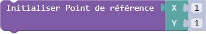
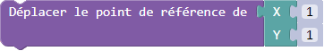
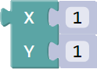
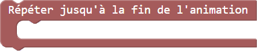

Bravo, tu as réussi la première partie!
Tu as maintenant un nouveau bloc pour faire des bonhommes!
Tu peux modifier les paramètres suivants :
1- Couleur du T-shirt
2- Couleur du pantalon
3- Bras levé
4- Position
Les deux premiers paramètres servent à choisir la couleur du t-shirt et la couleur du pantalon du bonhomme.
Les deux premiers paramètres servent à choisir la couleur du t-shirt et la couleur du pantalon du bonhomme.
Le troisième paramètre, le bras levé, est une case à cocher et permet de faire lever le bras du bonhomme ou non.
Le troisième paramètre, le bras levé, est une case à cocher et permet de faire lever le bras du bonhomme ou non.
Le quatrième et dernier paramètre, la position, permet d'indiquer la coordonnée que prendra le centre du bonhomme.
Le quatrième et dernier paramètre, la position, permet d'indiquer la coordonnée que prendra le centre du bonhomme.
Maintenant je vais t'expliquer comment faire bouger ces formes.
Pour commencer, tu devras apprendre à utiliser des POINTS DE RÉFÉRENCE!
Un POINT DE RÉFÉRENCE c’est un point invisible sur lequel nous allons pouvoir positionner une forme.
On doit toujours indiquer la position initiale du curseur grâce à ce bloc :

Afin de déplacer le point de référence, nous devons utiliser ce bloc :

Enfin, l'application va lire la dernière commande et créer le carré sur le curseur. Pour ce faire, nous devons changer le bloc  par le bloc
Enfin, l'application va lire la dernière commande et créer le carré sur le curseur. Pour ce faire, nous devons changer le bloc par le bloc
Maintenant que le bloc est changé, l'application va lire la commande et créer le carré sur le point de référence
Maintenant que le bloc est changé, l'application va lire la commande et créer le carré sur le point de référence
Maintenant, je vais te montrer comment utiliser les points de référence avec les boucles afin de faire déplacer les formes !
Voici la boucle que tu devras utiliser afin d'animer les formes :

Afin de t'expliquer comment utiliser la boucle et les points de référence pour faire bouger les formes, nous allons utiliser le programme à l'écran.
Le programme à l'écran utilise la boucle et les points de référence afin d'animer le carré en le faisant se déplacer de gauche à droite.
Pour commencer, le programme va lire la première commande et initialiser le point de référence à la position (1,3).
Pour commencer, le programme va lire la première commande et initialiser le point de référence à la position (1,3).
Par la suite, le programme va entrer dans la boucle et lire les commandes. Il commencera donc par créer un carré à la position du point de référence.
Par la suite, le programme va entrer dans la boucle et lire les commandes. Il commencera donc par créer un carré à la position du point de référence.
Ensuite, il va lire la seconde commande et déplacera le point de référence de 1 en X et de 0 en Y.
Ensuite, il va lire la seconde commande et déplacera le point de référence de 1 en X et de 0 en Y.
Ensuite, le programme va vérifier si l'animation est terminée (l'animation se termine lorsque la forme à atteint l'extrémité du plan cartésien).
L'animation n'est pas terminée donc l'application continue à répéter les commandes dans la boucle.
Le programme va relire la première commande et donc recréer le carré mais à la nouvelle position du point de référence !
Le programme va relire la première commande et donc recréer le carré mais à la nouvelle position du point de référence !
Comme tu peux le voir, c'est la boucle qui permet de créer l'animation ! À chaque fois que la boucle est lue, elle crée la forme puis elle déplace le point de référence ce qui permet, à la prochaine lecture de la boucle, de recréer l'image à la nouvelle position du point de référence et donner l'impression que la forme avance.

Sur le plan cartésien, pour déplacer la forme dans ce sens, il faudra que tu mettes des nombres en X plus
grand que 0.
ex: 4; 6; 21

Sur le plan cartésien, pour déplacer la forme dans ce sens, il faudra que tu mettes des nombres en X plus
petit que 0.
ex: -1; -3; -12
Sur le plan cartésien, pour déplacer la forme dans ce sens, il faudra que tu mettes des nombres en Y plus
grand que 0.
ex: 4; 6; 21
Sur le plan cartésien, pour déplacer la forme dans ce sens, il faudra que tu mettes des nombres en Y plus
petit que 0.
ex: -1; -3; -12
Tu auras la possibilité sur certaines pages d'utiliser
plusieurs points de référence.
Tu auras juste à changer le
numéro
pour faire bouger plein de formes en même temps!
A toi de jouer !

Clique sur le bouton SUIVANT en haut pour continuer